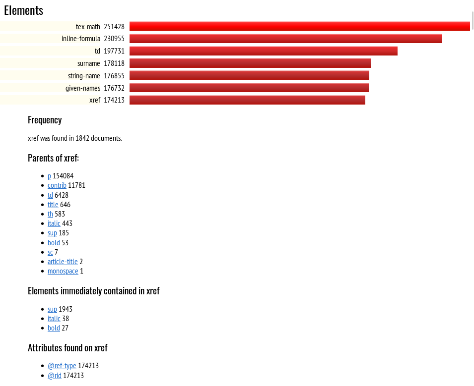
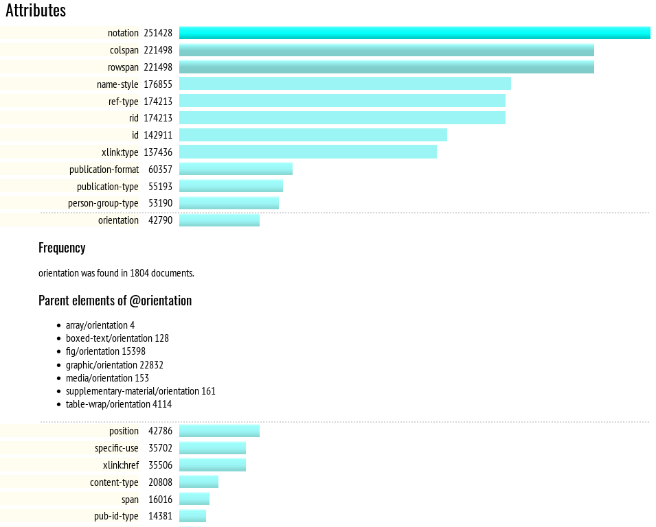
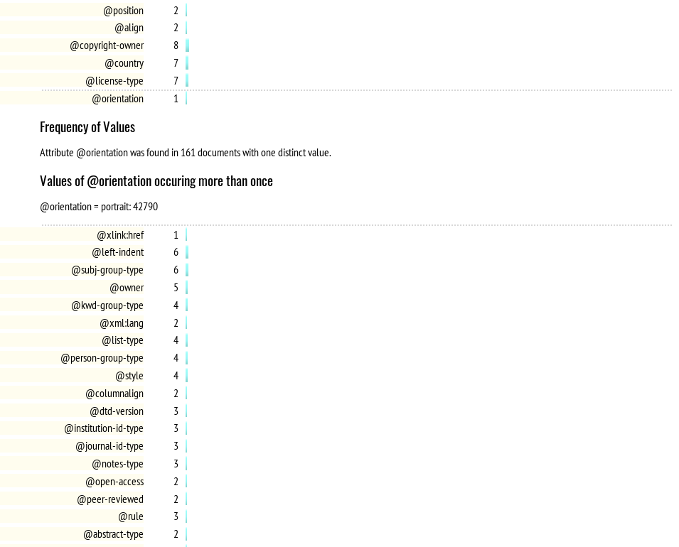

After sending some time figuring out which schemas or DTDs to use (and it is usually not worth worrying too much about getting them all right at first: the client might not have supplied all of the right files or they might do database imports without validation), it’s time to look inside, to look at the data.
A helpful initial question is, “what elements are used, and how often?” We could answer this for example in XPath or XQuery:
distinct-values(//name())
You might need to use something like db:open('data')//name(), depending on your XQuery or XPath processor.
The resulting list is unsorted, and doesn’t tell us how often each element name occurred.
//name() => distinct-values() => sort() => string-join('')might give us a sorted list. We would like the numbers, too:
for $n in (//name() => distinct-values() => sort()) return $n || ' ' || count(//*[name() eq $n])
This gives ugly output like this:
0 a 775223 body 9669 br 9608 circle 8718 div 265564 font 19208 form 19232 . . .
The empty name with a zero is from something without a name: the document node. We can use //*/name() instead and it will go away.
The output is still ugly. We could use some formatting, or maybe generate HTML. And after that, we might want the same for attributes. Then maybe we want to know about attribute values. With thousands of sample documents, though, there are a lot of values perhaps for ID and for dates that we might want to ignore.
You can see where this is going. Put all this into a script and comment it, give it some options or stylesheet parameters, and you can also run it on the output you generate and account for the numbers. Figure Figure 1, “FreqX Report for Element Counts” shows what a simple HTML report might look like:
Figure 1. FreqX Report for Element Counts
|  |
At this point, an ad-hoc query has turned into a tool. Attributes were added, as per Figure 2, “FreqX Report for Attributes”, which shows the start of the bar chart for elements sorted by frequency, once a user has clicked on, and expanded, the entry for xref. Figure Figure 3, “FreqX Report for Attribute Values” shows the attribute value table, where the user has expanded orientation to get more information.
The FreqX tool is freely available from gitlab; development was funded by Mulberry Technologies. However, it’s simple enough that developing a tool to meet your own needs might be easy, as might editing the FreqX source code. If you make changes or fix bugs, please do file issues or patches, so that everyone else can benefit. For example, an often-requested feature is being able to go from an attribute value to a list of documents in which it appears; this might be best accomplished using the eXist-db or BaseX RestXQ feature.
Figure 2. FreqX Report for Attributes
|  |
Figure 3. FreqX Report for Attribute Values
|  |